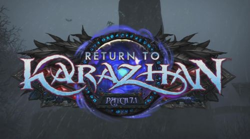
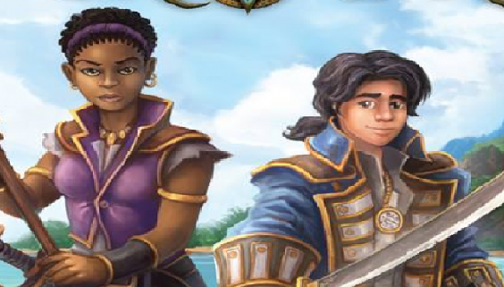
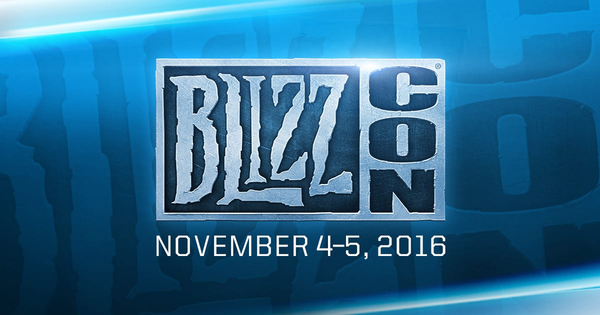
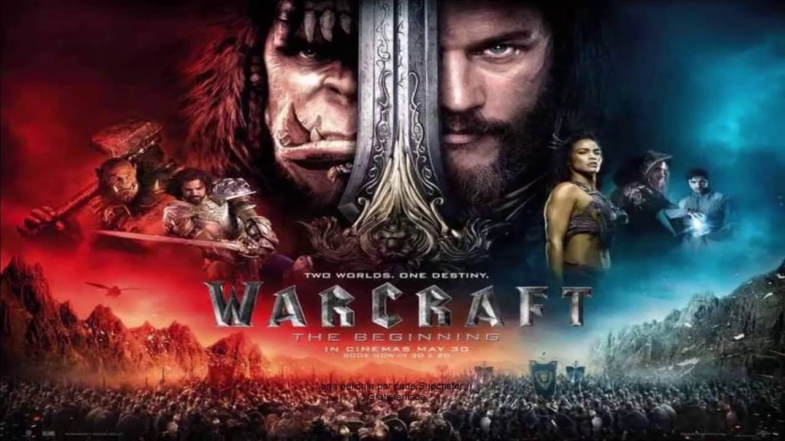

Patch 7.1: Return to Karazhan is nu live!
Patch 7.1: Return to Karazhan is nu live. Er is veel nieuw content bij gekomen waaronder: nieuwe PvP rewards, Return to Karazhan met een nieuw jasje en een grotere uitdaging, nieuwe Patch Notes en nog veel meer! Klik op de link om meer te weten te komen.
Meer informatie

Nieuwe boekserie "Traveler" is nu verkrijgbaar!
Greg Weisman is met een nieuwe boekenserie gekomen genaamd "Traveler". de auteur heeft in samenwerking met blizzard het eerste boek uitgebracht. Het boek gaat over de mytstiche wereld van warcraft. Het boek bevat vele schetsen en voledige kleuren illustraties.
Meer informatie

Blizzcon 2016 komt er eindelijk aan!
Vanaf 4 November is het dan eindelijk zo ver, Blizzcon 2016! De grootste conventie van Blizzard is er dan ook bijna. Blizzard Entertainment viert dan ook zijn 25 jarig bestaan. Met vele intervieuws, Meet and Greets en alle laatste Blizzard nieuwtjes worden daar bekent gemaakt. Kaarten zijn nog beschikbaar! De start van Blizzcon zal om 11AM pdt plaats vinden. Ook wordt dit evenement gestreamed op twitch.com. Voor meer informatie, Zie de link hieronder!
Meer informatie

Warcraft is nu verkrijgbaar op Blue-ray en DVD
Van Legendary en Universal Pictures Home Entertainment, WARCRAFT komt op Blu-ray ™ en dvd vandaag. Ga naar uw favoriete retailer en beleef het gevecht om Azeroth thuis! Wil je meer te weten komen over de film, klik dan op de link hieronder!
Meer informatie